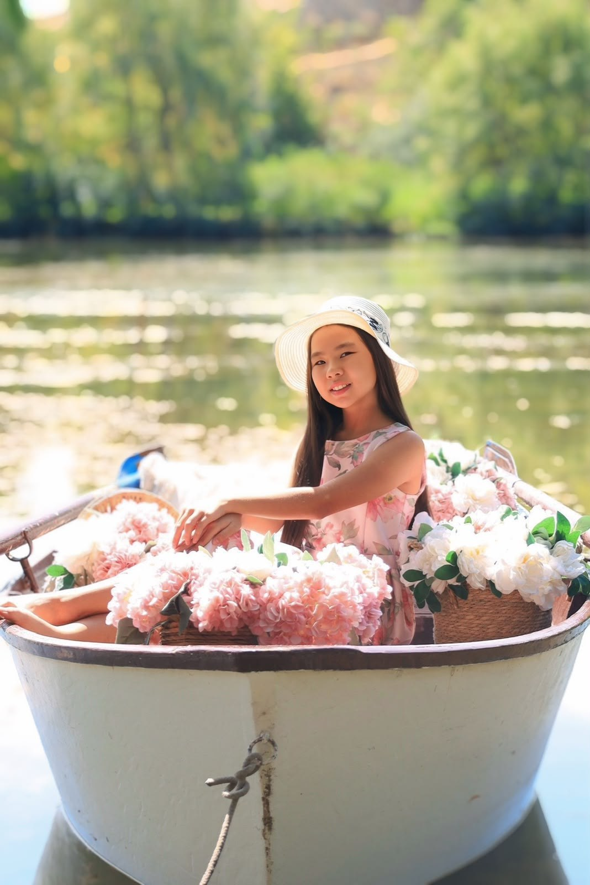
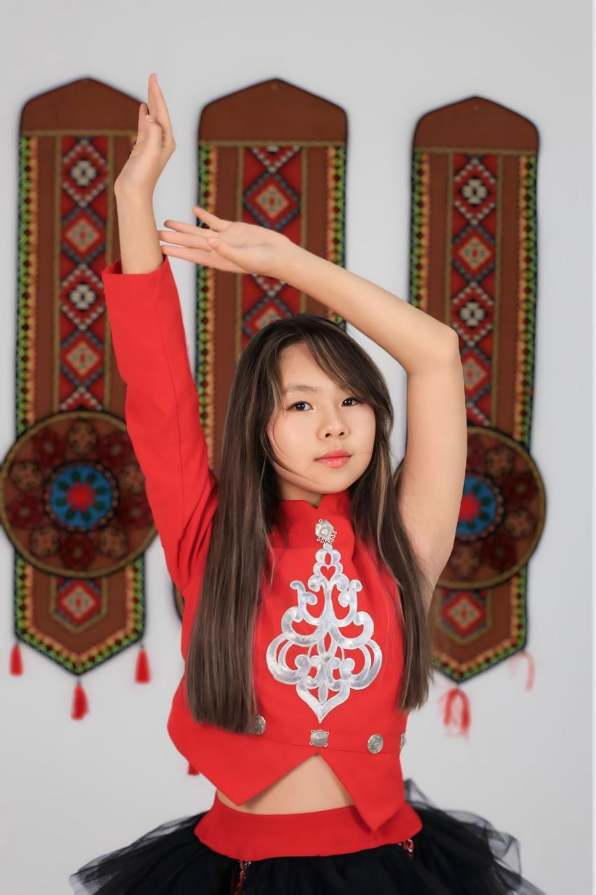
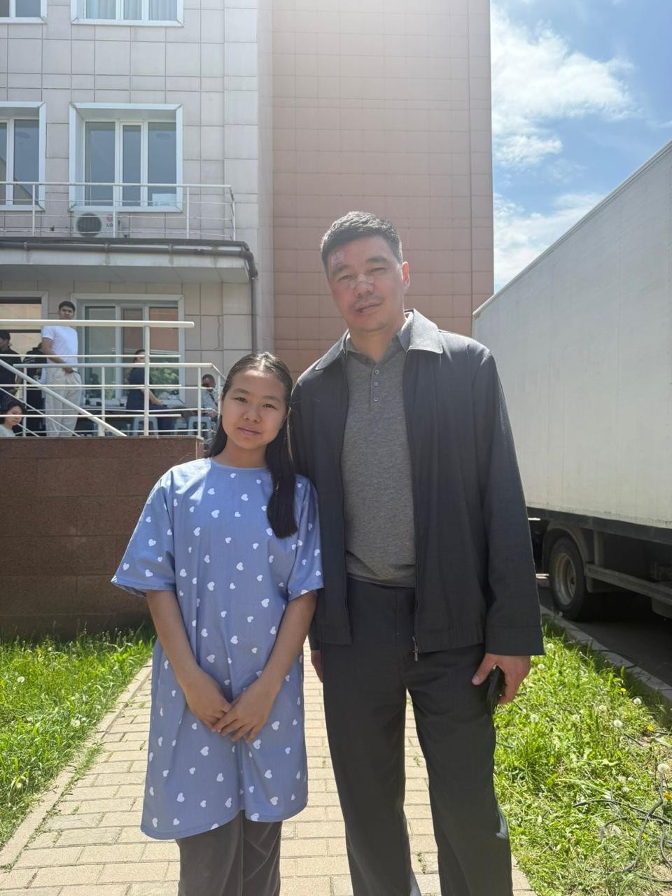

Фотогалерея

Студийный актёрский портрет
Естественный образ · Хэдшот
Актёрская карта эмоций (9 состояний)
Мимика и эмоциональный диапазон
Крупный план в чёрном
Классический кастинг-портрет
Художественная съёмка в лодке с цветами
Кинематографичный кадр на озере
Образ в кожаной куртке-косухе
Характерный подростковый типаж
Вечерний образ в чёрном платье
Элегантная фотосессия в студии
Осенний портрет в парке
Естественный дневной свет
Портрет с букетом роз
Студийный портрет с улыбкой
Красный казахский камзол с орнаментом
Традиционный национальный образ
С домбырой в красном костюме
Музыкальное исполнительское искусство
Чёрный стилизованный казахский наряд
Серебряный орнамент · Крупный план
С домбырой в чёрном наряде
Традиционный кюй и вокал
Пластика казахского танца
Сценическое движение
Нежный национальный образ
Белое платье с малиновым камзолом
На съёмках в клинике с актёрами
Бэкстейдж съёмочного процесса
На съёмочной площадке сериала
Рабочий момент между дублями
За кулисами съёмок и концерта
В сценическом костюме